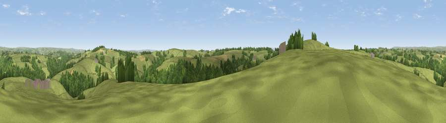

Viewpoint near Oakford
#17616 in England · top 29% of its area beats it · near OakfordWhere it is
The exact computed spot (SS 89275 18975). Click the marker for map links.
The view, rendered

A 360° render of this exact spot computed from the terrain model, tree cover and land cover — summer colours, afternoon light, calibrated against photographs of famous viewpoints. Real trees, hedges and buildings will differ in detail.
The panorama
Grey silhouette: terrain skyline in each direction (720 bearings, Earth curvature and refraction included). Dashed green: skyline with trees (+15 m) and buildings (+8 m) as obstacles. Blue strip: how far the ground is visible on each bearing.
Where the view opens
Wedge length = distance to the farthest visible ground on that bearing (vegetation-aware). Rings at 10, 25 and 50 km.
What fills the view
70% grassland · 25% woodland · 4% cropland ·
Angular shares of the visible panorama (visual magnitude), not map area. Landscape diversity 0.34 (0–1 Shannon).
Key numbers
More beautiful places nearby
The staircase of upgrades: each row has a higher view potential than everything closer. Driving times are estimates from straight-line distance, calibrated against real road routing — check an actual route before setting out.
| Place | Direction | Drive | Score |
|---|---|---|---|
| Stoodleigh Beacon | WSW · 1 km | ~3 min | 66.7 |
| Viewpoint near Skilgate | NE · 12 km | ~22 min | 72.5 |
| Cadbury Castle | S · 14 km | ~25 min | 73.7 |
| Fursdon Hill | SSE · 14 km | ~26 min | 76.2 |
| Viewpoint near Stockleigh Pomeroy | S · 16 km | ~28 min | 78.9 |
| Viewpoint near Roadwater | NE · 21 km | ~36 min | 82.9 |
| Viewpoint near Luccombe | N · 23 km | ~37 min | 84.5 |
| Viewpoint near Roadwater | NNE · 23 km | ~37 min | 85.2 |
50.95953, -3.57796 · source: screening · position refined by local search. Computed location — check access rights before visiting.